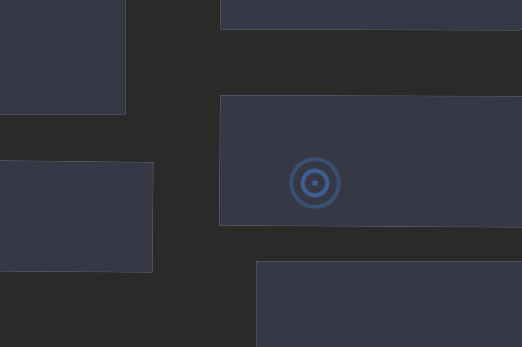
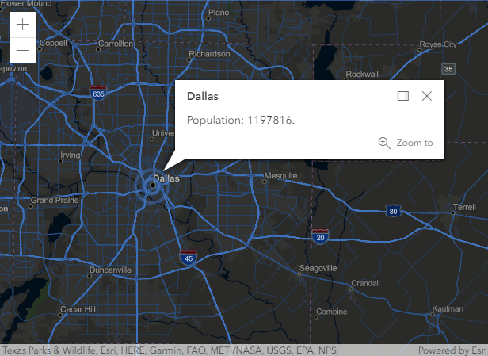

Note: Support for 3D on mobile devices may vary, view the system requirements for more information.
Important notes:
- This sample shows experimental functionality, please read the documentation carefully before using it in a product.
- This sample targets expert developers familiar with WebGL and hardware-accelerated rendering.
This sample demonstrates how to add a custom WebGL object to a map. We will create a pulsating marker inspired by telecommunications iconography. It is an animated icon that people usually associate with radio transmitters and broadcasting.
Developers can plug their own WebGL rendering algorithms into a MapView by creating custom layers and overriding the methods that are responsible for drawing on the screen. At the very least the user should subclass Layer or some other suitable base layer, and BaseLayerViewGL2D.
Please note that this sample is not intended to be a generic visualization technique for point graphics; to do so, it would need to honor the Graphics.symbol property, at least in the case where it is set to an instance of SimpleMarkerSymbol.
From a visualization perspective, this would mean at least honor the SimpleMarkerSymbol.type property, to support non-circular markers, and other properties such as size, angle, offsetx and offsety that can affect the marker position on screen.
1. Subclassing an existing layer type
The first step is subclassing a suitable layer type. In our case, we subclass GraphicsLayer to take advantage of its graphics collection, which we will use as a data source of the visualization. The only thing we really need to do is override createLayerView() to instantiate a custom WebGL layer view. Note this workflow only supports visualization in a MapView.
var CustomLayer = GraphicsLayer.createSubclass({
createLayerView: function(view) {
// We only support MapView, so we only need to return a
// custom layer view for the `2d` case.
if (view.type === "2d") {
return new CustomLayerView2D({
view: view,
layer: this
});
}
}
});
2. Subclassing BaseLayerViewGL2D
We also need to subclass BaseLayerViewGL2D. Start by defining two static properties aPosition and aOffset, which we initialize to 0 and 1. These will be used in calls to gl.bindAttribLocation, gl.enableVertexAttribArray, and gl.vertexAttribPointer.
// Subclass the custom layer view from BaseLayerViewGL2D.
var CustomLayerView2D = BaseLayerViewGL2D.createSubclass({
// Locations of the two vertex attributes that we use. They
// will be bound to the shader program before linking.
aPosition: 0,
aOffset: 1,
The constructor for this class will be responsible for initializing instance properties and setting up a watcher on the layer.graphics property.
We will then proceed to override attach(), detach() and render(). We will create all the WebGL resources such as shader programs and buffers needed for rendering in attach(), use them in render(), and finally delete them in detach(). We will also show how to override hitTest() so that the user will be able to interact with the features displayed by the custom view.
// Called once a custom layer is added to the map.layers collection and this layer view is instantiated.
attach: function () {
...
},
// Called every time a frame is rendered.
render: function (renderParameters) {
...
},
// Called once a custom layer is removed from the map.layers collection and this layer view is destroyed.
detach: function () {
...
},
// Called by the map view or the popup view when hit testing is required.
hitTest: function(x, y) {
...
},
We will see that render() sometimes will detect a condition that calls for a complete overwrite of all vertex and index data. Since this is a fairly complex operation, we factor it out in a utility method called updatePositions().
// Called internally from render().
updatePositions: function (renderParameters) {
...
}
});
The constructor
In the constructor we set up some matrices and vectors that will be used by the vertex shader to position geometries on screen. We use the glMatrix library to ease the process.
There are essentially two matrices involved: transform and display.
transformconverts from map units (i.e. meters) to pixels;displayconverts from pixels to clip space.
Ultimately only these matrices are passed to the shader, but we use a few more auxiliary vectors for their computation.
screenTranslationis a half-screen shift of pixel coordinates to take into account that the origin of the screen is not in the center of the screen, but in the upper-left corner;translationToCenterrepresents the translation that moves a map point to the center of the screen;screenScalingrepresents the conversion factor from map units to pixels.
We allocate all of these objects in the constructor and store references to them so that we avoid recreating them at each frame. Some of them have fixed values in certain elements and we can take advantage of this fact by pre-assigning their values in the constructor; in each frame of the animation we only update the elements that change.
The constructor also needs to start listening to changes in the layer.graphics collection; every time a change is detected, the needsUpdate flag is set to true and a new render is requested.
this.needsUpdate = false;
var requestUpdate = function() {
this.needsUpdate = true;
this.requestRender();
}.bind(this);
watchUtils.on(this, "layer.graphics", "change", requestUpdate, requestUpdate, requestUpdate);
Overriding attach()
The attach() override is still very much a constructor, but it has access to the WebGL context via the this.context member. When attach() is called, the WebGL context is guaranteed to be in the default state.
var gl = this.context;
We start by inlining some GLSL source code; they will be used to create a vertex shader and a fragment shader object. The vertex shader does the following:
- Takes the
a_positionattribute, expressed in map units, and converts it to pixels using theu_transformmatrix; - Adds an offset (in pixels);
- Finally converts the position to clip space using the
u_displaymatrix.
The offset is also output as a varying variable because it is needed for texturing in the fragment shader. The offset is obtained by multiplying the a_offset attribute by 70.0. The exact nature and meaning of the a_offset attribute and how it relates to a_position will be discussed later; the effect of the vertex transformation formula is that of producing a 70x70 marker centered on the original position.
var vertexSource =
"precision mediump float;" +
"uniform mat3 u_transform;" +
"uniform mat3 u_display;" +
"attribute vec2 a_position;" +
"attribute vec2 a_offset;" +
"varying vec2 v_offset;" +
"const float SIZE = 70.0;" +
"void main() {" +
" gl_Position.xy = (u_display * (u_transform * vec3(a_position, 1.0) + vec3(a_offset * SIZE, 0.0))).xy;" +
" gl_Position.zw = vec2(0.0, 1.0);" +
" v_offset = a_offset;" +
"}";
The fragment shader uses the length of the v_offset interpolated value as the input of a cosine-based law that modulates the transparency of the marker radially around the center. Note how we output a premultiplied color value.
var fragmentSource =
"precision mediump float;" +
"uniform float u_current_time;" +
"varying vec2 v_offset;" +
"const float PI = 3.14159;" +
"const float N_RINGS = 3.0;" +
"const vec3 COLOR = vec3(0.23, 0.43, 0.70);" +
"const float FREQ = 1.0;" +
"void main() {" +
" float l = length(v_offset);" +
" float intensity = clamp(cos(l * PI), 0.0, 1.0) * clamp(cos(2.0 * PI * (l * 2.0 * N_RINGS - FREQ * u_current_time)), 0.0, 1.0);" +
" gl_FragColor = vec4(COLOR * intensity, intensity);" +
"}";
Once the shaders are compiled and linked, uniform locations can be retrieved and stored for later use.
this.uTransform = gl.getUniformLocation(this.program, "u_transform");
this.uDisplay = gl.getUniformLocation(this.program, "u_display");
this.uCurrentTime = gl.getUniformLocation(this.program, "u_current_time");
We also create the vertex and index buffer, which are empty at the beginning. The indexBufferSize property will keep track of the number of indices in the index buffer.
this.vertexBuffer = gl.createBuffer();
this.indexBuffer = gl.createBuffer();
this.indexBufferSize = 0;
Finally, we save the current center of the view in a property called centerAtLastUpdate; we will see how this vector will play an important role in improving the geographical accuracy of the vertex shader.
this.centerAtLastUpdate = vec2.fromValues(this.view.state.center[0], this.view.state.center[1]);
Overriding detach()
This function acts as a destructor; it is called when the layer is removed from the map and the corresponding layer view must be destroyed. The attach() override must stop watching the graphics collection and dispose of the created WebGL objects. Like for attach(), also when detach() is called the WebGL state is guaranteed to be the default one.
this.watcher.remove();
var gl = this.context;
gl.deleteBuffer(this.vertexBuffer);
gl.deleteBuffer(this.indexBuffer);
gl.deleteProgram(this.program);
Overriding render()
The render() override has access to the WebGL context and the state of the view through the renderParameters object that is received as an argument.
var gl = renderParameters.context;
var state = renderParameters.state;
A very important thing to keep in mind is that every time that render() is called, the API resets WebGL to an initial state which is almost default; you have to reconfigure it from scratch every time. Also, do not issue WebGL calls from event handlers, promise callbacks, and timeout/interval functions; not only could it be inefficient, but you also have no guarantee that the WebGL state will be what you expect when they execute. In most cases, it will be not, and you may even end up breaking the rendering of other layers.
The only two settings in this initial state that may be non-default are:
- the bound framebuffer;
- the viewport, which is set to match the entire framebuffer.
The body of render() must not change these settings.
The first thing that render() does is to evaluate whether we need to update the contents of the vertex and index buffers and, if needed, do it; there are two different conditions that will trigger this event and we will discuss them in detail in the next section. For the time being, we factor out the decision and the update logic itself in an auxiliary function.
this.updatePositions(renderParameters);
The above call may empty the buffers if it determines that there is nothing to render. In this event, the work of the render() method is done and we can simply return.
if (this.indexBufferSize === 0) {
return;
}
Now we need to build the transform matrices that will be passed as uniforms to the shaders. We will use glMatrix to ease the process. Remember that glMatrix conventions are such that the order in which the various transformations appear in code is reversed because matrices are right-multiplied. Also, note how we include the devicePixelRatio in most computations; this is essential for the transformation to work properly across different screen types and browser settings.
We start by computing the transform matrix. The code below specifies a transformation that does the following:
- Moves the local origin to the center of the map;
- Scales by resolution, so that map units (meters) are converted to pixels;
- Rotates about the center of the screen according to the rotation of the map;
- Translates of half the screen size to account for the fact that the origin of the screen is not in the center, but instead is in the upper-left corner.
mat3.identity(this.transform);
this.screenTranslation[0] = (devicePixelRatio * state.size[0]) / 2;
this.screenTranslation[1] = (devicePixelRatio * state.size[1]) / 2;
mat3.translate(this.transform, this.transform, this.screenTranslation);
mat3.rotate(this.transform, this.transform, (Math.PI * state.rotation) / 180);
this.screenScaling[0] = devicePixelRatio / view.state.resolution;
this.screenScaling[1] = -devicePixelRatio / view.state.resolution;
mat3.scale(this.transform, this.transform, this.screenScaling);
mat3.translate(this.transform, this.transform, this.translationToCenter);
Together with the values that were specified in advance in the constructor (see section "The constructor"), the code fragment above completely specifies the transform matrix, except for one component that we have not discussed yet: the translationToCenter vector; for the time being you can assume it being defined as follows.
this.translationToCenter[0] = -state.center[0];
this.translationToCenter[1] = -state.center[1];
The above will appear to work fine, assuming that the a_position attribute position is an ordinary (x, y) coordinate pair in the spatial reference of the view. However, things will work only at small scales; zooming in will reveal that there are some precision issues caused by the large magnitude of the values involved; marker position will appear unstable at large scales. We will see how to address this in the next section.

The display matrix must convert from pixel to clip coordinates and we already assigned most of its elements statically; we only need to set two scale factors so that they match the (possibly changed) screen parameters.
this.display[0] = 2 / (devicePixelRatio * state.size[0]);
this.display[4] = -2 / (devicePixelRatio * state.size[1]);
At this point we have everything we need to render; we bind the program, upload the uniforms, set up the the attribute pointers, bind the index buffer and configure premultiplied alpha blending. Note how we pass the current time stamp in seconds performance.now() / 1000.0 to the shader program.
gl.useProgram(this.program);
gl.uniformMatrix3fv(this.uTransform, false, this.transform);
gl.uniformMatrix3fv(this.uDisplay, false, this.display);
gl.uniform1f(this.uCurrentTime, performance.now() / 1000.0);
gl.bindBuffer(gl.ARRAY_BUFFER, this.vertexBuffer);
gl.bindBuffer(gl.ELEMENT_ARRAY_BUFFER, this.indexBuffer);
gl.enableVertexAttribArray(this.aPosition);
gl.enableVertexAttribArray(this.aOffset);
gl.vertexAttribPointer(this.aPosition, 2, gl.FLOAT, false, 16, 0);
gl.vertexAttribPointer(this.aOffset, 2, gl.FLOAT, false, 16, 8);
gl.enable(gl.BLEND);
gl.blendFunc(gl.ONE, gl.ONE_MINUS_SRC_ALPHA);
gl.drawElements(gl.TRIANGLES, this.indexBufferSize, gl.UNSIGNED_SHORT, 0);
Finally, since we want the layer to be animated, we request another frame right away.
this.requestRender();
Dealing with precision issues
The updatePositions() method is responsible for updating the position of vertices on screen. It is also responsible for implementing the logic that tackles the precision issue discussed above. It begins by retrieving some of the parameters it needs.
var gl = renderParameters.context;
var stationary = renderParameters.stationary;
var state = renderParameters.state;
If the view is not stationary, i.e. the user is panning, rotating or zooming the map, then we compute the translationToCenter property as the difference between centerAtLastUpdate and state.center; note the difference with the previous formula we provided for the same variable (see section "Overriding render()"), where the centerAtLastUpdate term was absent and translationToCenter was simply the opposite of state.center.
if (!stationary) {
this.translationToCenter[0] = this.centerAtLastUpdate[0] - state.center[0];
this.translationToCenter[1] = this.centerAtLastUpdate[1] - state.center[1];
this.requestRender();
return;
}
The advantage of the formula above is that it will result in a transform matrix with a much smaller translation component; this in turn will enable us to encode smaller coordinates in the vertex buffer, thereby limiting the impact of precision errors, which when using floating point are proportional to the magnitude. This will solve the instability of positions at large scales.
Next, we check if an update of the vertex positions is needed at all; if the graphics collection did not change, and the view is still centered where the last update occurred, no action is needed and we can return.
if (!this.needsUpdate && this.translationToCenter[0] === 0 && this.translationToCenter[1] === 0) {
return;
}
Otherwise, we must update the buffers. We can at this point reset the needsUpdate flag and record the current center in the centerAtLastUpdate variable.
this.centerAtLastUpdate.set(state.center);
this.translationToCenter[0] = 0;
this.translationToCenter[1] = 0;
this.needsUpdate = false;
The guards in the update logic are such that changes in the underlying data, as well as changes in the point of view, will cause a regeneration of the buffer data, but such update process is delayed until the view becomes stationary. This way we avoid constant write access to GPU video memory as the user is still panning around; also, note that simply rotating and zooming in and out does not change the center, and hence it will not result in an update of buffer data.
If the control flow made it to this point we must generate the actual buffer data. We will output a quad for each marker; each quad has 4 vertices with 2 attributes of size 2; a_position expressed in map units and an a_offset. Note how we do not encode the absolute position of the point, but its much smaller position relative to this.centerAtLastUpdate. Note also that each vertex is given the same values for a_position; it is through the values in a_offset attribute that we displace each vertex to become one of the corners of the quad. For the a_offset attribute we use -0.5 to signify left/top and +0.5 to signify right/bottom; when multiplied by the constant 70.0 in the vertex shader (see the "Overriding attach()" section) this results in a square, 70x70 pixels markers.
var graphics = this.layer.graphics;
gl.bindBuffer(gl.ARRAY_BUFFER, this.vertexBuffer);
var vertexData = new Float32Array(16 * graphics.length);
var i = 0;
graphics.forEach(
function(graphic) {
var point = graphic.geometry;
// The (x, y) position is relative to the encoded center.
var x = point.x - this.centerAtLastUpdate[0];
var y = point.y - this.centerAtLastUpdate[1];
vertexData[i * 16 + 0] = x;
vertexData[i * 16 + 1] = y;
vertexData[i * 16 + 2] = -0.5;
vertexData[i * 16 + 3] = -0.5;
vertexData[i * 16 + 4] = x;
vertexData[i * 16 + 5] = y;
vertexData[i * 16 + 6] = 0.5;
vertexData[i * 16 + 7] = -0.5;
vertexData[i * 16 + 8] = x;
vertexData[i * 16 + 9] = y;
vertexData[i * 16 + 10] = -0.5;
vertexData[i * 16 + 11] = 0.5;
vertexData[i * 16 + 12] = x;
vertexData[i * 16 + 13] = y;
vertexData[i * 16 + 14] = 0.5;
vertexData[i * 16 + 15] = 0.5;
++i;
}.bind(this)
);
For the index buffer, we produce six indices per quad: 0-1-2, 1-3-2, which connect the four vertices together using two right triangles sharing the hypotenuse, which together form the quad.
gl.bindBuffer(gl.ELEMENT_ARRAY_BUFFER, this.indexBuffer);
var indexData = new Uint16Array(6 * graphics.length);
for (var i = 0; i < graphics.length; ++i) {
indexData[i * 6 + 0] = i * 4 + 0;
indexData[i * 6 + 1] = i * 4 + 1;
indexData[i * 6 + 2] = i * 4 + 2;
indexData[i * 6 + 3] = i * 4 + 1;
indexData[i * 6 + 4] = i * 4 + 3;
indexData[i * 6 + 5] = i * 4 + 2;
}
Finally the prepared data is uploaded to the GPU using gl.bufferData calls. The number of indices is recorded into the property indexBufferSize so that when gl.drawElements is called we know how many elements to draw.
Overriding hitTest()
The custom layer view that we implemented is a visual representation of an underlying geographical dataset, the layer.graphics collection. The user generally expects to be able to interact with such geographical information. This can be achieved by implementing the hitTest() method to return the graphic that is under a given screen point (x, y).
If there are no graphics on the layer we return nothing.
// The map view.
var view = this.view;
if (this.layer.graphics.length === 0) {
// Nothing to do.
return promiseUtils.resolve(null);
}
Otherwise we find the closest graphic in screen space.
var distances = this.layer.graphics.map(function (graphic) {
var graphicPoint = view.toScreen(graphic.geometry);
return Math.sqrt((graphicPoint.x - x) * (graphicPoint.x - x) + (graphicPoint.y - y) * (graphicPoint.y - y));
});
var minIndex = 0;
distances.forEach(function (distance, i) {
if (distance < distances.getItemAt(minIndex)) {
minIndex = i;
}
});
var minDistance = distances.getItemAt(minIndex);
Since all markers are circles with a diameter of 70 pixels, it is safe to say that if the minimum distance is more than 35 pixels, then nothing was hit.
if (minDistance > 35) {
return promiseUtils.resolve(null);
}
Otherwise it is a hit; we set the layer as the source layer for the graphic (required for the popup view to work) and we return a promise resolving to the graphic.
var graphic = this.layer.graphics.getItemAt(minIndex);
graphic.sourceLayer = this.layer;
return promiseUtils.resolve(graphic);

Note that in a real-world custom visualization the markers may not be round, and their size and position may depend on properties of SimpleMarkerSymbol; the hit testing logic needs to account for it so that the interaction experience matches what the user sees on the screen.
Additional visualization samples and resources
- Sample: Use three.js from an external renderer
- Sample: Extend the SceneView WebGL engine
- Sample: Animated lines with WebGL